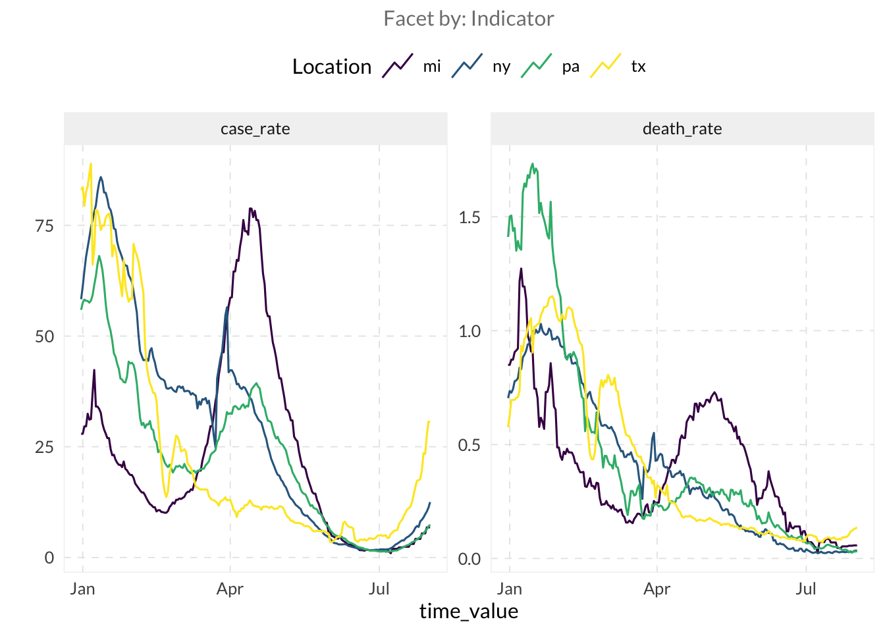
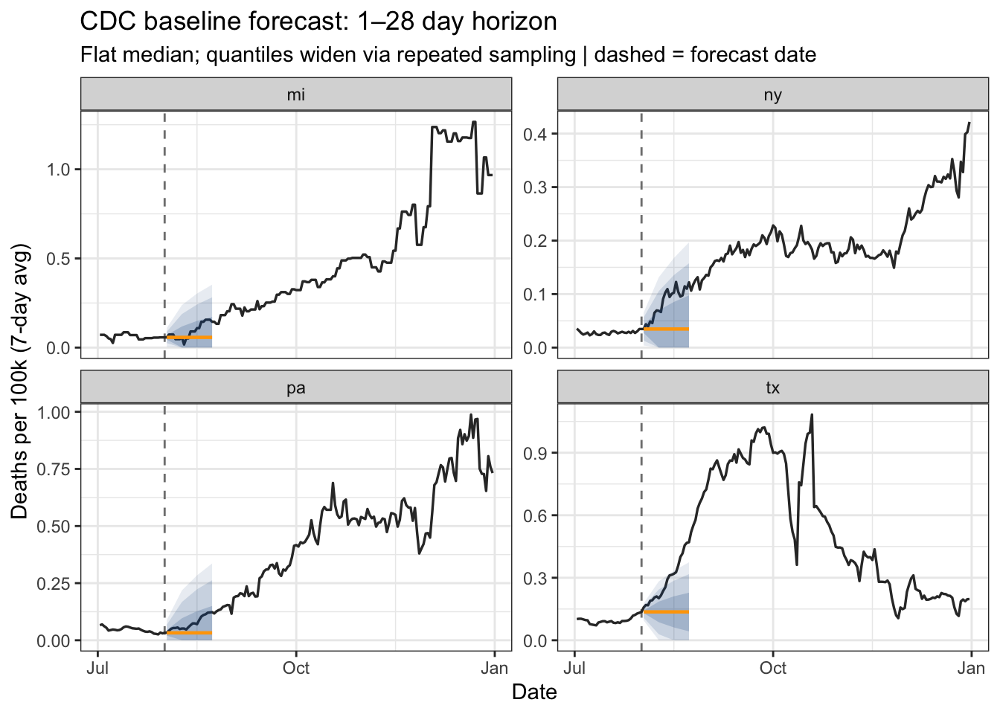
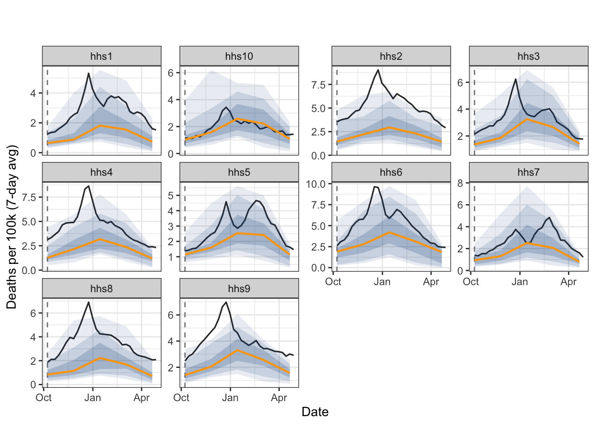
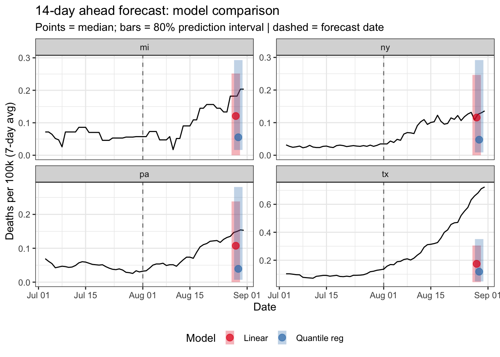
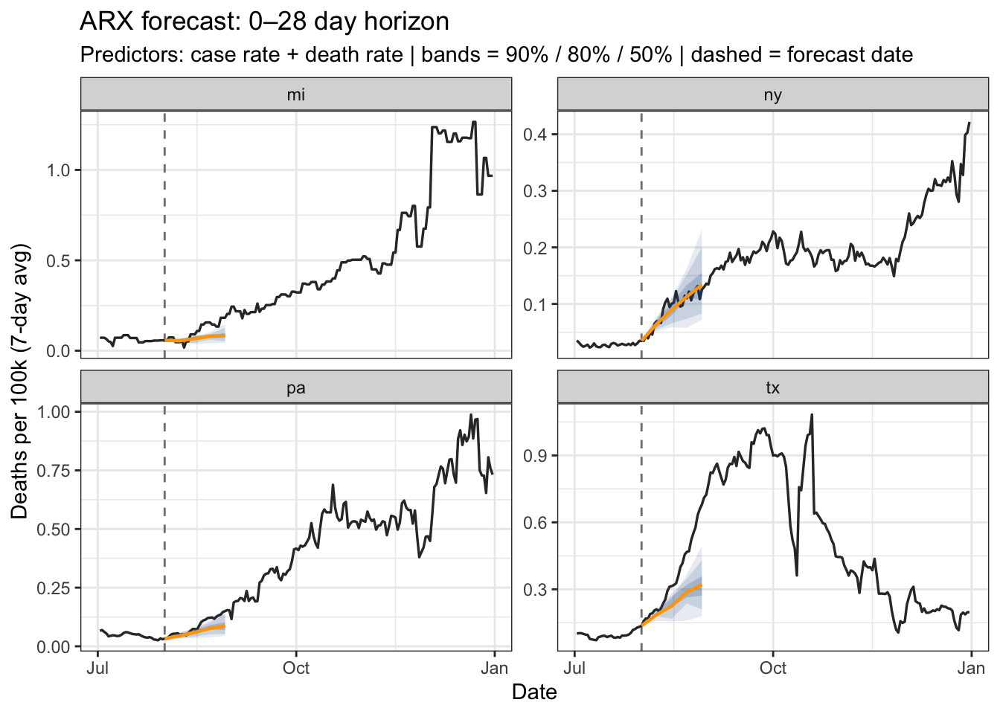

if (!requireNamespace("pak", quietly = TRUE)) install.packages("pak")
if (!requireNamespace("InsightNetApr26", quietly = TRUE)) {
pak::pkg_install("cmu-delphi/InsightNet-apr-2026/InsightNetApr26")
}
InsightNetApr26::verify_setup()
library(epidatr)
library(epiprocess)
library(epipredict)
library(dplyr)
library(ggplot2)
library(parsnip)MINI-PROJECT 3: Customizing models
Introduction
This notebook covers the third mini-project, focusing on building, customizing, and evaluating forecasting models using epipredict.
Load packages
{InsightNetApr26} package ensures all required Delphi tools and their correct versions/branches are installed.
Initial Setup
We’ll use built-in COVID-19 case and death rates for training.
# covid_case_death_rates: built-in daily COVID-19 case and death rates per 100k
head(covid_case_death_rates)An `epi_df` object, 6 x 4 with metadata:
* geo_type = state
* time_type = day
* as_of = 2023-03-10
Latency (lag from as_of to latest observation by time series):
* lag across all time series = 799 days
# A tibble: 6 × 4
geo_value time_value case_rate death_rate
<chr> <date> <dbl> <dbl>
1 ak 2020-12-31 35.9 0.158
2 al 2020-12-31 65.1 0.438
3 ar 2020-12-31 66.0 1.27
4 as 2020-12-31 0 0
5 az 2020-12-31 76.8 1.10
6 ca 2020-12-31 95.9 0.755forecast_date <- as.Date("2021-08-01")
used_locations <- c("mi", "ny", "tx", "pa")
# Training data: everything up to and including the forecast date
jhu <- covid_case_death_rates |>
filter(time_value <= forecast_date, geo_value %in% used_locations)
head(jhu)An `epi_df` object, 6 x 4 with metadata:
* geo_type = state
* time_type = day
* as_of = 2023-03-10
Latency (lag from as_of to latest observation by time series):
* lag across all time series = 798–799 days
# A tibble: 6 × 4
geo_value time_value case_rate death_rate
<chr> <date> <dbl> <dbl>
1 mi 2020-12-31 27.9 0.850
2 ny 2020-12-31 58.3 0.704
3 pa 2020-12-31 55.9 1.41
4 tx 2020-12-31 83.0 0.576
5 mi 2021-01-01 27.9 0.850
6 ny 2021-01-01 61.3 0.735autoplot(jhu, death_rate, case_rate)
Visualization Helper
We define a helper function to create fan charts of the forecasts.
fan_chart <- function(results,
window_df = covid_case_death_rates |>
filter(
time_value > "2021-07-01",
geo_value %in% used_locations
),
value_name = "death_rate",
fcst_date = forecast_date,
title = "",
subtitle = "") {
results |>
pivot_quantiles_wider(.pred_distn) |>
arrange(geo_value, target_date) |>
ggplot(aes(x = target_date)) +
geom_vline(
xintercept = fcst_date, linetype = "dashed",
color = "gray50", linewidth = 0.5
) +
geom_line(
data = window_df,
aes(x = time_value, y = .data[[value_name]]),
color = "gray20", linewidth = 0.6, inherit.aes = FALSE
) +
geom_ribbon(aes(ymin = `0.05`, ymax = `0.95`), fill = "dodgerblue4", alpha = 0.10) +
geom_ribbon(aes(ymin = `0.1`, ymax = `0.9`), fill = "dodgerblue4", alpha = 0.15) +
geom_ribbon(aes(ymin = `0.25`, ymax = `0.75`), fill = "dodgerblue4", alpha = 0.20) +
geom_line(aes(y = `0.5`), color = "orange", linewidth = 0.8) +
facet_wrap(~geo_value, scales = "free_y") +
labs(
title = title, subtitle = subtitle,
x = "Date", y = "Deaths per 100k (7-day avg)"
) +
theme_bw()
}Basic Modeling
We start with three baseline forecasters.
ARX Forecaster
Autoregressive model using lagged values as features.
fcst_arx <- arx_forecaster(jhu, outcome = "death_rate")
fcst_arx
fcst_arx$predictions# A tibble: 4 × 5
geo_value .pred .pred_distn forecast_date target_date
<chr> <dbl> <qtls(7)> <date> <date>
1 mi 0.0691 [0.0691] 2021-08-01 2021-08-08
2 ny 0.0529 [0.0529] 2021-08-01 2021-08-08
3 pa 0.0488 [0.0488] 2021-08-01 2021-08-08
4 tx 0.141 [0.141] 2021-08-01 2021-08-08 # Inspect fitted coefficients
# It shows how each lag contributes to the forecast
hardhat::extract_fit_engine(fcst_arx$epi_workflow)
Call:
stats::lm(formula = ..y ~ ., data = data)
Coefficients:
(Intercept) lag_0_death_rate lag_7_death_rate lag_14_death_rate
0.02366 0.85465 0.21921 -0.21633 # Use pivot_quantiles_wider to expand a quantile distribution column
# into individual columns
pivot_quantiles_wider(fcst_arx$predictions, .pred_distn)# A tibble: 4 × 11
geo_value .pred forecast_date target_date `0.05` `0.1` `0.25` `0.5` `0.75`
<chr> <dbl> <date> <date> <dbl> <dbl> <dbl> <dbl> <dbl>
1 mi 0.0691 2021-08-01 2021-08-08 0 0 0.0404 0.0691 0.0978
2 ny 0.0529 2021-08-01 2021-08-08 0 0 0.0242 0.0529 0.0817
3 pa 0.0488 2021-08-01 2021-08-08 0 0 0.0201 0.0488 0.0775
4 tx 0.141 2021-08-01 2021-08-08 0.0164 0.0670 0.112 0.141 0.169
# ℹ 2 more variables: `0.9` <dbl>, `0.95` <dbl>Flatline Forecaster
Predicts the most recently observed value with increasingly wide quantiles.
fcst_flat <- flatline_forecaster(jhu, outcome = "death_rate")
fcst_flat$predictions# A tibble: 4 × 5
geo_value .pred .pred_distn forecast_date target_date
<chr> <dbl> <qtls(7)> <date> <date>
1 mi 0.0573 [0.0573] 2021-08-01 2021-08-08
2 ny 0.0347 [0.0347] 2021-08-01 2021-08-08
3 pa 0.0324 [0.0324] 2021-08-01 2021-08-08
4 tx 0.136 [0.136] 2021-08-01 2021-08-08 CDC Baseline Forecaster
CDC FluSight flat-line baseline.
fcst_cdc <- cdc_baseline_forecaster(
jhu,
outcome = "death_rate",
args_list = cdc_baseline_args_list(
aheads = seq(1, 28, 7),
data_frequency = "1 day"
)
)
fcst_cdc$predictions |> filter(target_date == "2021-08-09")# A tibble: 4 × 6
geo_value .pred ahead .pred_distn forecast_date target_date
<chr> <dbl> <dbl> <qtls(23)> <date> <date>
1 mi 0.0573 8 [0.0573] 2021-08-01 2021-08-09
2 ny 0.0347 8 [0.0347] 2021-08-01 2021-08-09
3 pa 0.0324 8 [0.0324] 2021-08-01 2021-08-09
4 tx 0.136 8 [0.136] 2021-08-01 2021-08-09 fan_chart(
fcst_cdc$predictions,
title = "CDC baseline forecast: 1–28 day horizon",
subtitle = "Flat median; quantiles widen via repeated sampling | dashed = forecast date"
)
Climatological Forecaster
Predicts the median and quantiles based on historical values around the same date in previous years.
fluview_hhs <- pub_fluview(
regions = paste0("hhs", 1:10),
epiweeks = epirange(100001, 222201)
)
fluview <- fluview_hhs |>
select(
geo_value = region,
time_value = epiweek,
issue,
ili
) |>
as_epi_archive() |>
epix_as_of_current()
fcst_climate <- climatological_forecaster(
fluview |> filter(time_value < "2023-10-08"),
outcome = "ili",
args_list = climate_args_list(
forecast_horizon = seq(0, 28, 7),
time_type = "week",
quantile_by_key = "geo_value",
forecast_date = as.Date("2023-10-08")
)
)
fcst_climate$predictions# A tibble: 50 × 5
geo_value forecast_date target_date .pred .pred_distn
<chr> <date> <date> <dbl> <qtls(7)>
1 hhs1 2023-10-08 2023-10-08 0.658 [0.648]
2 hhs10 2023-10-08 2023-10-08 1.03 [1.03]
3 hhs2 2023-10-08 2023-10-08 1.46 [1.45]
4 hhs3 2023-10-08 2023-10-08 1.37 [1.37]
5 hhs4 2023-10-08 2023-10-08 1.30 [1.27]
6 hhs5 2023-10-08 2023-10-08 1.16 [1.14]
7 hhs6 2023-10-08 2023-10-08 1.90 [1.9]
8 hhs7 2023-10-08 2023-10-08 0.927 [0.938]
9 hhs8 2023-10-08 2023-10-08 0.845 [0.834]
10 hhs9 2023-10-08 2023-10-08 1.42 [1.4]
# ℹ 40 more rowsfan_chart(
fcst_climate$predictions,
fluview |>
filter(time_value >= "2023-10-08", time_value < "2024-05-01") |>
mutate(geo_value = factor(geo_value, levels = paste0("hhs", 1:10))),
"ili",
fcst_date = as.Date("2023-10-08")
)
Model Customization
We can customize the training engine and hyperparameters.
# Swap the training engine via the trainer:
# linear_reg() — default
# quantile_reg() — optimizes quantile loss directly
lags <- arx_args_list(lags = c(0, 7, 14), ahead = 28)
fcst_linear <- arx_forecaster(jhu, "death_rate", "death_rate",
trainer = linear_reg(),
args_list = lags
)
fcst_qr <- arx_forecaster(jhu, "death_rate", "death_rate",
trainer = quantile_reg(),
args_list = lags
)
# Compare engines: 80% interval + median, color-coded by model
bind_rows(
fcst_linear$predictions |> mutate(model = "Linear"),
fcst_qr$predictions |> mutate(model = "Quantile reg")
) |>
pivot_quantiles_wider(.pred_distn) |>
filter(geo_value %in% used_locations) |>
ggplot(aes(x = target_date, color = model, fill = model)) +
geom_vline(
xintercept = forecast_date, linetype = "dashed",
color = "gray50", linewidth = 0.5
) +
geom_line(
data = filter(
covid_case_death_rates,
geo_value %in% used_locations,
time_value > forecast_date - 30,
time_value <= forecast_date + 30
),
aes(x = time_value, y = death_rate),
color = "black", linewidth = 0.5, inherit.aes = FALSE
) +
geom_linerange(
aes(ymin = `0.1`, ymax = `0.9`),
linewidth = 4, alpha = 0.3,
position = position_dodge(width = 1.5)
) +
geom_point(aes(y = .pred),
size = 3,
position = position_dodge(width = 1.5)
) +
scale_color_brewer(palette = "Set1") +
scale_fill_brewer(palette = "Set1") +
facet_wrap(~geo_value, scales = "free_y") +
labs(
title = "14-day ahead forecast: model comparison",
subtitle = "Points = median; bars = 80% prediction interval | dashed = forecast date",
x = "Date", y = "Deaths per 100k (7-day avg)", color = "Model", fill = "Model"
) +
theme_bw() +
theme(legend.position = "bottom")
Multi-Signal and Trajectory Forecasting
We can use multiple predictors and forecast over a range of horizons.
# Fit one arx model per horizon (0–28 days ahead), and plot as a fan chart.
all_arx <- lapply(
seq(0, 28, 7),
\(h) arx_forecaster(
jhu,
outcome = "death_rate",
predictors = c("case_rate", "death_rate"),
trainer = quantile_reg(),
args_list = arx_args_list(
lags = list(c(0, 1, 2, 3, 7, 14), c(0, 7, 14)),
ahead = h
)
)
)
results_arx <- lapply(all_arx, \(x) x$predictions) |> bind_rows()
fan_chart(
results_arx,
title = "ARX forecast: 0–28 day horizon",
subtitle = "Predictors: case rate + death rate | bands = 90% / 80% / 50% | dashed = forecast date"
)
Growth Rate Classification
Finally, we can using arx_classifier to predict categories of growth rates.
classifier <- arx_classifier(
covid_case_death_rates |>
filter(geo_value %in% used_locations, time_value < forecast_date),
outcome = "death_rate",
predictors = c("death_rate", "case_rate"),
args_list = arx_class_args_list(
lags = list(c(0, 1, 2, 3, 7, 14), c(0, 7, 14)),
ahead = 2 * 7,
breaks = 0.25 / 7
)
)
classifier$predictions# A tibble: 4 × 4
geo_value .pred_class forecast_date target_date
<chr> <fct> <date> <date>
1 mi (-Inf,0.0357] 2021-07-31 2021-08-14
2 ny (0.0357, Inf] 2021-07-31 2021-08-14
3 pa (0.0357, Inf] 2021-07-31 2021-08-14
4 tx (0.0357, Inf] 2021-07-31 2021-08-14